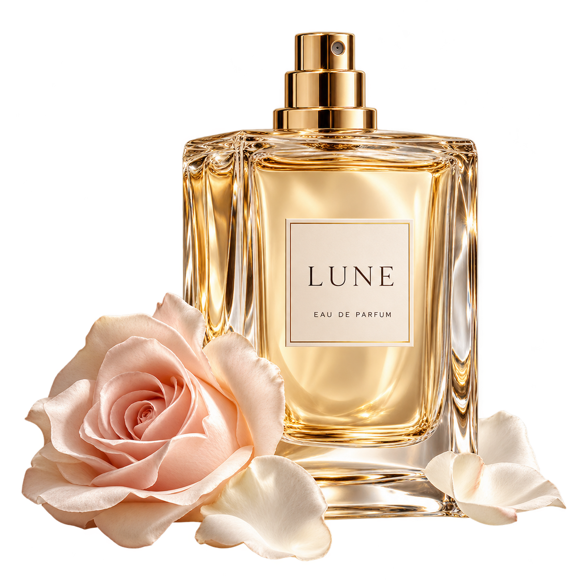

初见 · 明亮
以清透光线，描绘香气刚刚展开的第一印象。
LUNE / EVERYDAY COLLECTION
不用说出口，也能被记住。
玫瑰、光影与一缕缓缓散开的香气。

✦an invisible signature.01 / A LITTLE INTERACTION
从瓶口的一缕细雾，到空气中的柔和光点。
用动态画面，感受香氛的表达。
拖动进度或点击阶段，查看每个细节。
支持暂停、重播，并尊重系统的减少动态效果设置。
以清透光线，描绘香气刚刚展开的第一印象。
玫瑰色花瓣与温润金色，铺开柔和的中间层次。
深色空间里的细微光泽，让记忆多停留一会儿。
02 / FIND YOUR LITTLE RITUAL
一只通透玻璃瓶，一枚克制的金色喷头。将香氛的层次，化作日常里的私人印记。
虚构品牌与产品概念展示，图片及动效用于视觉设计，不提供真实商品销售。
Some memories are made of scent.
再看一遍动态体验 ↗